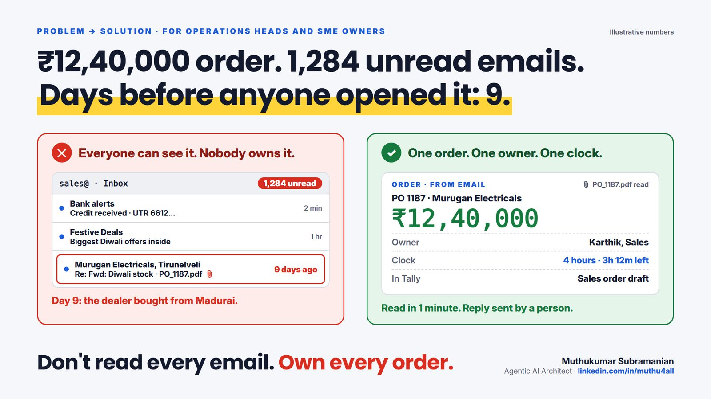
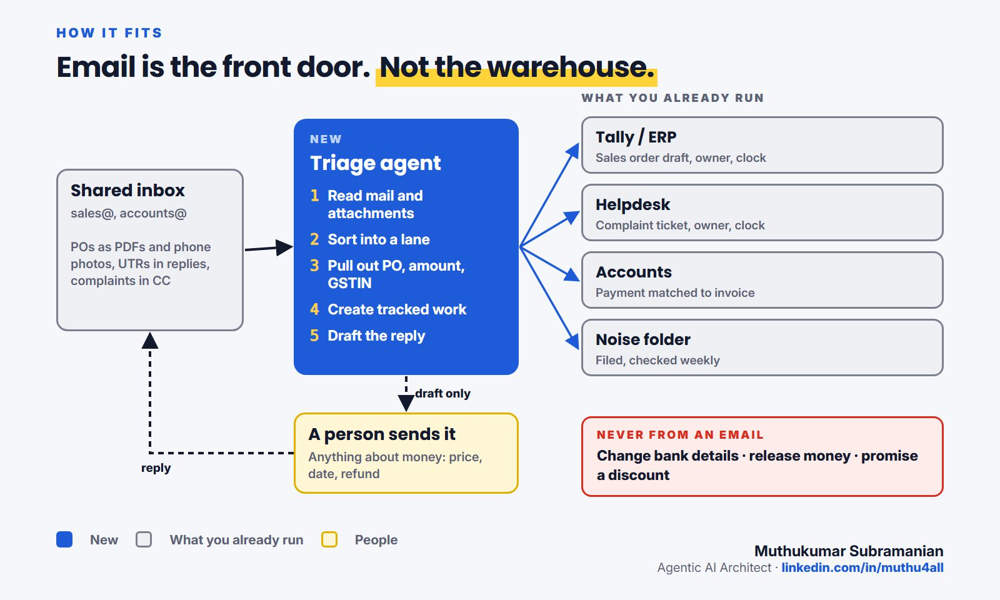
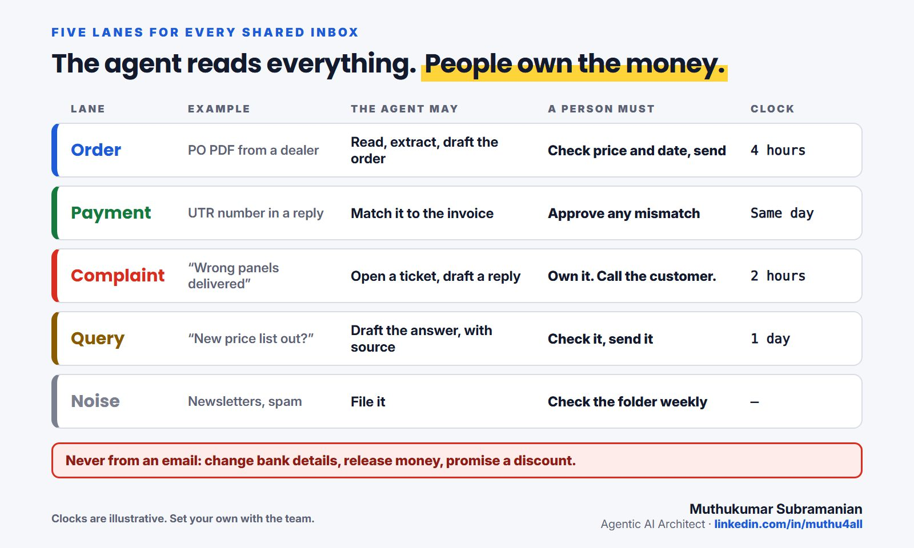

A ₹12 Lakh Order Sat in an Inbox for 9 Days. An AI Agent Would Have Seen It.
By Muthukumar Subramanian · Agentic AI Architect

It was a Thursday in October, three weeks before Diwali.
A dealer in Tirunelveli emailed a purchase order to a Chennai lighting distributor: 1,800 LED panels and 600 tube lights, ₹12,40,000 with GST. He sent it to sales@, as he always did. The PDF was attached to an old thread called "Re: Fwd: Diwali stock".
The sales@ inbox had 1,284 unread emails. Five people could open it. Each of them thought someone else was watching it.
Nine days later the dealer called to ask where his stock was. By then he'd placed the same order with a competitor in Madurai, who had answered in two hours. (The firms are a composite, and the numbers are illustrative.)
Nobody in Chennai had done anything wrong. That's exactly the problem.
The problem: email is where orders go to wait
Ask any SME owner where the business actually happens, and the honest answer isn't the ERP. It's the inbox.
→ Purchase orders arrive as PDFs, sometimes as phone photos of a printed page.
→ Payment confirmations come as UTR numbers buried in a reply.
→ Complaints arrive as long, angry threads with the manager in CC.
→ Approvals sit in "Please see below" chains of 14 messages.
Then someone reads each one and types it into Tally or the ERP by hand. Usually. When they have time.
A shared inbox feels like a system because everybody can see it. It isn't one. It has no owner, no queue and no clock. A shared inbox is a place where everyone can see the work and nobody has to do it.
Here's my contrarian bit. Most companies think the fix is a better email client, or a rule that says "check sales@ twice a day". It isn't. The fix is to stop treating email as the place where work lives. Email should be the front door, not the warehouse.
The solution: a triage agent that turns mail into tracked work
This is one of the most practical jobs for an AI agent today, because the hard part was always reading messy text, and that's what today's models do well.
The agent sits on the shared mailbox and does five things:
→ 1. Read everything, including the PDF, the Excel attachment and the phone photo of the PO.
→ 2. Sort it into a lane: order, payment, complaint, query or noise.
→ 3. Pull out the fields: PO number, items, quantities, amount, GSTIN, delivery date.
→ 4. Create a tracked item in the system you already run: a sales order draft in Tally or the ERP, a ticket in the helpdesk, a payment to match in accounts. Each one gets a named owner and a clock.
→ 5. Draft the reply, and wait for a person to send it.
That last step matters. Let the agent read everything. Don't let it promise anything. On anything involving money (a price, a discount, a delivery date, a refund) the agent drafts and a human sends. Above a limit, say ₹5 lakh, it also needs a named approver.
In our story, the PO is read in under a minute. A sales order draft appears with ₹12,40,000 on it, Karthik from sales is its owner, and a four-hour clock starts. If the clock runs out, his manager hears about it, not the competitor.
This is the same lesson as my piece on AI notetakers, "The AI Agent Wrote Down the Task. Nobody Did It.": capture is easy, but a task without an owner is a wish.


👉 [GIF: B-day13-4-in-article-sorting-the-inbox.gif]
Caption: Mail drops in, the agent sorts it, and the ₹12 lakh PO becomes an order with an owner and a clock. All details illustrative.
The tools are already here, across vendors
You don't need to build this from scratch. Copilot Studio can run an agent off a shared Outlook mailbox and act through connectors. Gemini in Gmail summarises threads and drafts replies. Freshdesk's Freddy AI suggests the priority and group for incoming tickets, and Zoho Desk has Zia for summaries and replies. For a smaller firm, a workflow tool like n8n can join any inbox to any model (OpenAI, Claude, Gemini or an open model) and to Tally or Zoho Books.
The tool is the easy choice. The lanes are the hard one.
Who sets it up: the forward deployed engineer
Every company says its inbox gets "orders, payments and complaints". Then you sit with the team for a week and find 23 kinds of email: dealer POs, distributor POs, scheme claims, credit-note requests, transporter LR copies, GST notices, CA queries.
That's the job of a forward deployed engineer (FDE): an engineer who works inside the customer's team and ships on their real systems. They read three months of real mail with the people who handle it, agree the lanes, and find the one dealer who always sends POs as WhatsApp screenshots forwarded to email.
After go-live, someone owns the rules: which lanes exist, who owns each, what the money limit is, and what the agent must never send. Some companies call that person an AI Agent Manager. The titles are still settling. In a 30-person SME it's usually the operations head, with two hours a week.
The hard parts
→ Fake POs and payment-change emails. Business email compromise is one of the costliest frauds in the FBI's 2025 internet crime report, about $3 billion in reported losses. An agent that turns emails into orders can also turn a forged "please update our bank account" mail into a payment. Never let the agent change bank details or release money because an email said so.
→ Wrong lane, quiet failure. A complaint filed as a query sits for days. Watch the misroutes weekly, especially in the first month.
→ Scanned and handwritten attachments. Faded thermal prints and phone photos still trip up extraction. Keep the original attached, and have a person check any amount above the limit.
→ Privacy. Customer emails hold names, phone numbers and addresses. Under India's DPDP Act, be clear what you process and where, and use a company-approved AI service, not a free tool someone found.
→ The inbox isn't the only door. Half the dealers will still send orders on WhatsApp or to a salesperson's personal Gmail. Fix the main door first, then bring the side doors into it.
The opportunity
→ For operations heads: count the orders that came by email last month, then count the ones that reached the ERP the same day. The gap is your number.
→ For SME owners: start with one inbox and one lane. Orders first, because that's where the money is.
→ For CA firms and Tally partners: "inbox to Tally" is a service you can sell to every distributor you already audit.
→ For IT services firms and founders: triage agents with Indian rules built in (GSTIN checks, UTR matching, dealer schemes, Tamil and Hindi mail) are a market the global tools only half serve.
An inbox isn't a system. An owner is.
Your turn 👇
Should an AI agent ever send a reply about money without a human pressing send: yes or never?
Tag the person in your company who secretly checks sales@ at 11 PM because nobody else does.